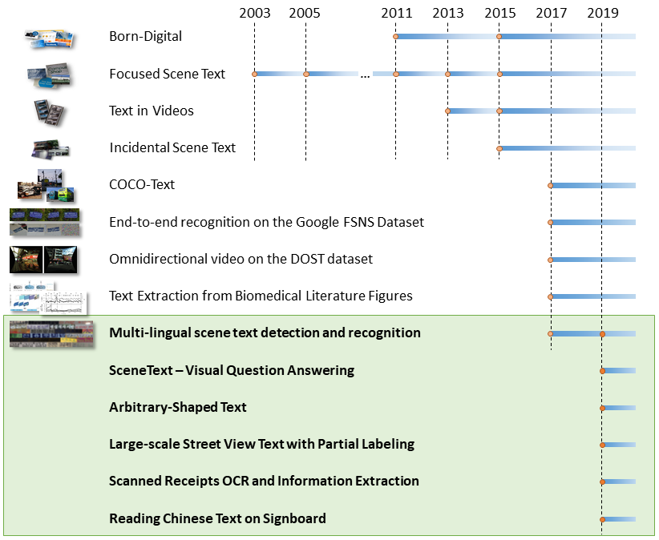
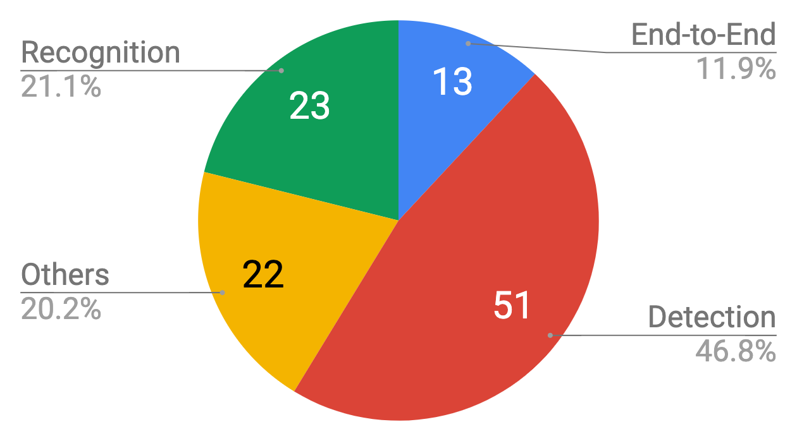

技术基础¶
一. 文本检测的评测方法：¶
文本图像定位分为 Challenge 1、2 和 4，视频中的图像定位s是 Challenge 3。主要介绍Challenge 1、2 和 4 的异同：
Challenges 1(Born-Digital)的数据来源于 电脑制作；Challenges 2主要是来源于用户有意识的 对焦拍摄 的图像。比如一些翻译的场景，这些场景中文字基本是对焦好的且水平的；Challenges 4主要来源也是用户拍摄，但是这些照片的拍摄是 比较随意的场景 。通常情况下这些图片里的文字角度、清晰度、大小等情况十分复杂。
针对不同的挑战，有不同的评测方法；Challenges 1 和 2 使用的是 DetEva ；Challenges 4 通过 IoU 来判定算法的 recall、precision 的指标。
1. DetEval 方法¶
recallMat 和 precisionMat 中存储的是每个检测框的召回率和准确率，计算方法为：
其中 gt 表示标准框，det 表示检测框。area() 函数表示求矩形的 面积，inter()函数表示求两个矩形的 交集。
DetEval 方法考虑到三种情况，分别是图 a、b 和 c 中的三种。
在考虑三种情况前，先进行以下定义：
定义两个阈值 r 和 p ，r 表示判断召回率的阈值 0.8，p 表示判断准确率的阈值 0.4。
定义 RecallValue 和 PrecisionValue，且初始值为 0。
召回率 Recall 和 准确率 Precision 分别为最终的 RecallValue 除以标准框数量和 PrecisionValue 除以检测框数量。
one-to-one matches (a)：表示 一个标准框对应一个检测框。比较 recallMat 和 precisionMat 与阈值大小。判断是否为 one-to-one 的情况，若满足，就将 RecallValue 和 PrecisionValue 的数值加 1。one-to-many matches (b)：表示 一个标准框对应多个检测框。比较 recallMat 和 precisionMat 与阈值大小。判断是否为 one-to-many 的情况，若满足，则对于 RecallValue 值加上 0.8，PrecisionValue 值加上 0.8 * **many**（对应检测框的数目）。many-to-one matches (c)：表示 多个标准框对应一个检测框。比较 recallMat 和 precisionMat 与阈值大小。判断是否为 many-to-one 的情况，若满足，则对于 RecallValue 值加上 0.8 * many**（对应检测框的数目），PrecisionValue 值加上 **0.8。
最终评价指标：F1-Score，为 Recall 和 Precision 的 调和平均数。公式如下：
2. IOU 方法¶
在 iouMat 中，统计大于 0.5 的个数，然后除以标准框的个数得到 Recall，除以检测框的个数得到 Precision。然后通过 F1-Score 方法得到最终评价指标 F1。
二. 数据集：¶
ICDAR2015(IC15)
IC15 的 Challenge 4 是 检测任意方向场景文本 最常用的基准。它由两组组成:训练和测试，分别包含1000和500张图像。 图像是使用 Google Glass 获取的，不需要考虑视点、位置或帧质量。 长度超过3个字符的可读拉丁语文字才会被标注为四边形。
ICDAR2013(IC13)
IC13 是另一个被广泛使用的场景文本检测基准，包含训练图片229张，测试图片233张。 这个数据集中的 文本实例大多是水平的，单词被标注为矩形。
MSRA-TD500(TD500)
TD500中的文本也是任意方向的，但比IC15中的文本要长得多，因为它们是用 行注释 的。 TD500总共包含500张图片，300张用于培训，200张用于测试。中英文都有。
三. 基础网络：¶
特征提取网络：对图像中的文本进行特征提取，可来源于通用场景的图像分类模型。例如，VGGNet，ResNet、InceptionNet 等；特定功能网络：例如，适合提取图像细节特征的 FCN 全卷积网络，适合图像校正的 STN 空间变换网络 等；基础检测网络：侧重检测精度的 Faster-rcnn 和侧重检测速度的 SSD 网络。
四. 基础模型：¶
1. 文本检测¶
近年来出现了各种基于深度学习的技术解决方案。它们从 特征提取、区域建议网络(RPN)、多目标协同训练、Loss改进、非极大值抑制（NMS）、半监督学习 等角度对常规物体检测方法进行改造， 极大提升了自然场景图像中文本检测的准确率。例如：
CTPN：用 BLSTM 模块提取字符所在图像 上下文特征 ，以提高文本块识别精度。
RRPN：文本框标注采用 BBOX +方向角度值 的形式，模型中产生出可旋转的文字区域候选框，并在 边框回归计算 过程中找到待测文本行的倾斜角度。
DMPNet：使用 四边形（非矩形）标注文本框，来更紧凑的包围文本区域。
SegLink：将单词 切割为更易检测的小文字块 ，再 预测邻近连接 将小文字块连成词。
PixelLink：通过 实例分割检测文本 ，预测的 正像素 通过预测的 正链接 加入到文本实例中，然后直接从分割结果中提取边界框。
EAST: 使用具有 位置意识的NMS（非最大值抑制） 进行非常密集的预测。
TextBoxes：调整了文字区域参考框的 长宽比例，并将特征层 卷积核调整为长方形，从而更适合检测出细长型的文本行。
FTSN：使用 Mask-NMS 代替传统 BBOX 的 NMS 算法来过滤候选框。
WordSup：采用 半监督学习策略，用单词级标注数据来训练字符级文本检测模型。
2. 文本识别¶
CRNN是目前较为流行的图文识别模型，可识别较长的文本序列。利用 BLSTM 将特征向量进行融合来 提取字符序列的上下文特征，然后得到每列特征的概率分布，最后通过 转录层(CTC rule) 进行预测得到文本序列。
RARE模型在识别变形的图像文本时效果很好。模型预测过程中，输入图像首先要被送到一个 空间变换网络 中做处理，矫正过的图像然后被送入 序列识别网络 中得到文本预测结果。
3. 端到端模型¶
FOTS是图像文本检测与识别同步训练、端到端可学习的网络模型。引入了 旋转感兴趣区域（RoIRotate）, 可以从卷积特征图中产生出定向的文本区域，从而 支持倾斜文本 的识别。
STN-OCR是集成了 图文检测和识别 功能的端到端可学习模型。在它的检测部分嵌入了一个 空间变换网络（STN） 来对原始输入图像进行仿射变换。利用这个空间变换网络，可以对检测到的多个文本块分别执行 旋转、缩放和倾斜 等图形矫正动作，从而在后续文本识别阶段得到更好的识别精度。
注解
相关网址：
OCR 竞赛 ICDAR 网址：https://rrc.cvc.uab.es
评测指标官方网址：https://rrc.cvc.uab.es/?com=faq
DetEval方法：https://perso.liris.cnrs.fr/christian.wolf/software/deteval/inde